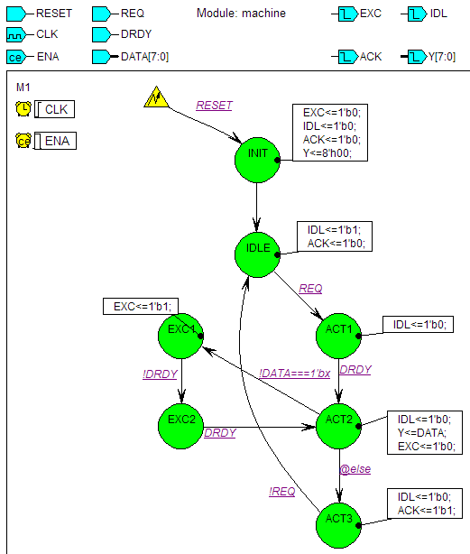

SVA Assertions in
Verilog State Machine Code
This sample design shows variety of
assertions and covers testing the
Verilog state machine design performance.
Design Files
- readme.html - this file
- machine.asf - state diagram of the
transmission controller design
- machine_TB.v - testbench for the design
- run_all.do, run_debug.do
- script for compiling and running simulation
Design Description
The design described by the diagram shown below receives 8-bit data via
DATA input and sends it out (after validity check) to the Y output.
The machine is ready to accept data when IDL line is high. The machine
responds to attention request (REQ input going high) by lowering IDL
and listening to the data ready (DRDY) input: when DRDY goes high the
analysis of data begins.
If the received data is valid, the machine sends it out, sets acknowledge
line (ACK output) to high for one clock cycle and returns to idle state.
If the received data is invalid, the machine enters exception handling
procedure by activating EXC output, waiting for end of current transfer
(DRDY low) and then repeated transfer of data (DRDY high).

To better use Active-HDL features, SVA properties, asserts and covers
are added directly to the FSM diagram and later automatically embedded
in the Verilog code generated from the diagram.
The entire SVA code is added as Diagram Actions.
Tested properties
- RESET and ENA should never be active simultaneously (for
ASSERT).
- Activation of REQ should be eventually followed by
its deactivation (for ASSERT).
- Activation of REQ should be followed by activation of ACK
within 6 cycles (for ASSERT).
- There should be activation of exception handling (for
COVER).
- There should be completion of exception handling (for
COVER).
- The sequence of states init->idle->act1->act2->act3->idle
should be executed with at most 2 cycle delays (for COVER).
- The sequence of states init->idle->act1->act2->act3->idle
should be executed with at most 4 cycle delays (for COVER).
SVA implementation
This section presents pure SVA implementation of the properties,
asserts and covers; please note that in the Verilog code generated from
the diagram all statements listed below (excluding explanatory
comments) are placed in the machine module before the machine
procedural blocks.
// Immediate ASSERT directive using boolean expression instead of property;
// Replace it with the commented out assertion to get full-blown concurrent assertion.
always@(*) res_ena_a: assert ( !(RESET&&ENA)) else $error("RESET and ENA active at the same time!");
//res_ena_a: assert property( @(RESET &&
ENA) not(RESET&&ENA)) else $error("RESET and ENA active at the
same time!");
// CLOCKED PROPERTY defined: REQ
should eventually be deactivated after each activation;
property req_nreq;
@(posedge CLK) REQ |-> ##[1:$] !REQ;
endproperty
// Previously defined property used
in ASSERT directive;
// failure of the property will trigger the error message
req_nreq_a: assert property(req_nreq) else $error("REQ signal not deactivated!");
// CLOCKED PROPERTY defined: ACK
should be activated 1 to 6 cycles after REQ
property req_ack;
@(posedge CLK) $rose(REQ) |-> ##[1:6] $rose(ACK);
endproperty
// Previously defined property used
in ASSERT directive;
// failure of the property will trigger the error message
req_ack_a: assert property(req_ack) else $error("No timely ACK after REQ activation");
// ADVANCED PROPERTIES: we start
with parameterized sequence definition (states changing in the order
//
'INIT->IDLE->ACT1->ACT2->ACT3->IDLE'
with the longest possible number of cycles in one state being 'max');
sequence std_seq(max);
(M1==INIT)##1(M1==IDLE)[*1:max]##1(M1==ACT1)[*1:max]##1(M1==ACT2)##1(M1==ACT3)[*1:max]##1(M1==IDLE);
endsequence
// NOW we define fast and slow
execution path properties using 'std_seq' sequence;
property fast_path;
@(negedge CLK) std_seq(2);
endproperty
property slow_path;
@(negedge CLK) std_seq(4);
endproperty
// PROPERTIES are now used in COVER
directives; warning messages are printed when given path is covered:
fast_path_c: cover property(fast_path) $warning("Fast execution path covered!");
slow_path_c: cover property(slow_path) $warning("Slow execution path covered!");
// COVER directive using unnamed
(immediate) property testing exception condition in the machine;
// transition from ACT2 to EXC1 means that exception condition was
covered and message should be printed
exc_tst_c: cover property(@(negedge CLK) (M1==ACT2)##1(M1==EXC1)) $warning("Exception condition successfuly tested!");
// CLOCKED PROPERTY defined: there
should be a transition from EXC2 to ACT2 (exit from an exception)
property exc_exit;
@(negedge CLK) (M1==EXC2) ##1 (M1==ACT2);
endproperty
// Previously defined property used
in COVER Directive;
// only if property is covered the warning message will be printed.
exc_exit_c: cover property(exc_exit) $warning("Successful exit from exception condition covered!");
Simulation
Run one of provided scripts to compile the design with its testbench
and simulate:
- run_debug.do compiles
design, sets signal breakpoint on the state register and assertion
breakpoint on req_ack
assertion, then starts simulation; use run button to proceed through
the simulation (divide document area vertically and keep diagram in one
window and waveform in the other).
- run_all.do compiles
design and runs simulation without waveforms or breakpoints, allowing
operator to see different messages reported in the console.